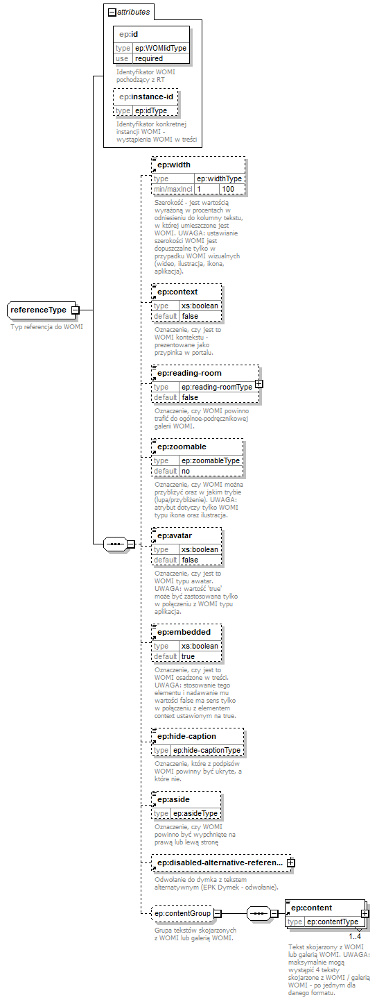

| diagram |  | ||||||||||||||||||||||
| namespace | http://epodreczniki.pl/ | ||||||||||||||||||||||
| children | ep:width ep:context ep:reading-room ep:zoomable ep:avatar ep:embedded ep:hide-caption ep:aside ep:disabled-alternative-reference ep:content | ||||||||||||||||||||||
| used by |
|
||||||||||||||||||||||
| attributes |
|
||||||||||||||||||||||
| annotation |
|
||||||||||||||||||||||
| source | <xs:complexType name="referenceType"> <xs:annotation> <xs:documentation>Typ referencja do WOMI</xs:documentation> </xs:annotation> <xs:sequence> <xs:element ref="ep:width" minOccurs="0"> <xs:annotation> <xs:documentation>Szerokość - jest wartością wyrażoną w procentach w odniesieniu do kolumny tekstu, w której umieszczone jest WOMI. UWAGA: ustawianie szerokości WOMI jest dopuszczalne tylko w przypadku WOMI wizualnych (wideo, ilustracja, ikona, aplikacja).</xs:documentation> </xs:annotation> </xs:element> <xs:element ref="ep:context" minOccurs="0"/> <xs:element ref="ep:reading-room" minOccurs="0"/> <xs:element ref="ep:zoomable" minOccurs="0"> <xs:annotation> <xs:documentation>Oznaczenie, czy WOMI można przybliżyć oraz w jakim trybie (lupa/przybliżenie). UWAGA: atrybut dotyczy tylko WOMI typu ikona oraz ilustracja.</xs:documentation> </xs:annotation> </xs:element> <xs:element ref="ep:avatar" minOccurs="0"> <xs:annotation> <xs:documentation>Oznaczenie, czy jest to WOMI typu awatar. UWAGA: wartość 'true' może być zastosowana tylko w połączeniu z WOMI typu aplikacja.</xs:documentation> </xs:annotation> </xs:element> <xs:element ref="ep:embedded" minOccurs="0"> <xs:annotation> <xs:documentation>Oznaczenie, czy jest to WOMI osadzone w treści. UWAGA: stosowanie tego elementu i nadawanie mu wartości false ma sens tylko w połączeniu z elementem context ustawionym na true.</xs:documentation> </xs:annotation> </xs:element> <xs:element ref="ep:hide-caption" minOccurs="0"/> <xs:element ref="ep:aside" minOccurs="0"/> <xs:element ref="ep:disabled-alternative-reference" minOccurs="0"/> <xs:group ref="ep:contentGroup" minOccurs="0"/> </xs:sequence> <xs:attribute name="id" type="ep:WOMIidType" use="required"> <xs:annotation> <xs:documentation>Identyfikator WOMI pochodzący z RT</xs:documentation> </xs:annotation> </xs:attribute> <xs:attribute name="instance-id" type="ep:idType"> <xs:annotation> <xs:documentation>Identyfikator konkretnej instancji WOMI - wystąpienia WOMI w treści</xs:documentation> </xs:annotation> </xs:attribute> </xs:complexType> |
| namespace | http://epodreczniki.pl/ | ||||||||
| type | WOMIidType | ||||||||
| properties |
|
||||||||
| facets |
|
||||||||
| annotation |
|
||||||||
| source | <xs:attribute name="id" type="ep:WOMIidType" use="required"> <xs:annotation> <xs:documentation>Identyfikator WOMI pochodzący z RT</xs:documentation> </xs:annotation> </xs:attribute> |
| namespace | http://epodreczniki.pl/ | |||||||||||||
| type | idType | |||||||||||||
| facets |
|
|||||||||||||
| annotation |
|
|||||||||||||
| source | <xs:attribute name="instance-id" type="ep:idType"> <xs:annotation> <xs:documentation>Identyfikator konkretnej instancji WOMI - wystąpienia WOMI w treści</xs:documentation> </xs:annotation> </xs:attribute> |